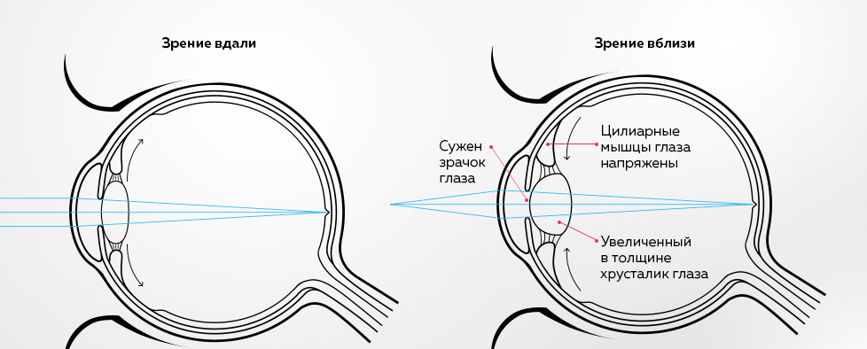

СПАЗМ АККОМОДАЦИИ
Аккомодация — способность глаза осуществлять четкое видение предметов, находящихся на разных расстояниях от глаза. Благодаря аккомодации обеспечивается зрительный комфорт и возможность выполнения различных видов деятельности.
Главную роль в аккомодации и дезаккомодации играют мышцы цилиарного тела, которые представляют собой сопряжение разных видов мышечных волокон: меридиональные (мышца Брюкке) — холинергические, кольцевые (мышца Мюллера) и радиальные (мышца Иванова) — адренергические.
При нарушении работы аккомодационного аппарата область аккомодации сужается. Изменяется физиологическая координация между аккомодацией и конвергенцией. Это ведет к зрительному дискомфорту, повышенной утомляемости, головным болям — так называемому астенопическому состоянию.
Аномалии рефракции, хронические инфекции и авитаминозы являются предрасполагающими факторами для появления астенопических жалоб. Напряженная зрительная работа у ряда лиц сама по себе может привести к развитию астенопии и затруднению зрительной работы как вдаль, так и вблизи.
Аккомодативная астенопия состоит из глазных и зрительных симптомов утомления. Глазные симптомы проявляются покраснением глаз, слезотечением, резью, ломящими болями в глазных яблоках и надбровных дугах. Зрительные симптомы заключаются в зрительном дискомфорте, периодическом затуманивании зрения, диплопии, снижении зрения вблизи.
Частым последствием напряженной работы является патологическое состояние аккомодации — спазм. В настоящее время спазм аккомодации рассматривается как одна из причин развития прогрессирующей миопии у детей и молодых людей. Состояние, при котором глаз становится миопичным вследствие зафиксированного сокращения ресничной мышцы и увеличения толщины хрусталика, называется спазмом аккомодации или ложной близорукостью.
Важнейшая задача для офтальмологов —предупреждение прогрессирования миопии. Часто близорукость прогрессирует в школьные годы, особенно в последнее время, когда интенсивная зрительная нагрузка в учебном процессе сочетается с широким применением компьютера. Постоянное сокращение ресничной мышцы сопровождается недостаточностью кровообращения и, как следствие, ухудшением трофики цилиарного тела и заднего отдела склеры. Снижение кровотока приводит к слабости аккомодации и хориоретинальным дистрофиям. Кроме того, движения глаз при зрительной работе изменяют внутриглазное давление в сторону его повышения, так как при конвергенции внутренние прямые мышцы давят на глазное яблоко. В свою очередь повышенное внутриглазное давление способствует растяжению глаза.
При лечении спазма аккомодации применяются капли, гимнастика для глаз или аппаратное лечение.
